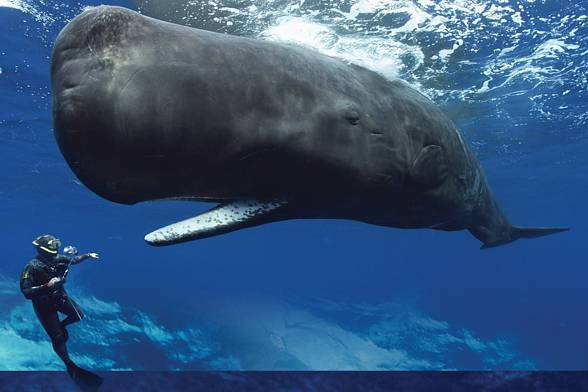

Przed rozpoczęciem przemysłowych połowów waleni około 12% żelaza zawartego w wodach Oceanu Południowego pochodziło z odchodów wielorybów. Dzięki temu bujnie rozwijał się fitoplankton, który pochłania dwutlenek węgla.
Płetwal błękitny żywi się planktonem, głównie krylem, którego dziennie połyka 4 tony. Pożywienie najczęściej chwyta nurkując. Największe ilości planktonu występują w wodach podbiegunowych.
Maksymalna zarejestrowana długość ciała tego ssaka jest równa 33 metry, ale potwierdzona naukowo to blisko 30 m, a masa ciała 173 tony, potwierdzone naukowo 136 ton.
